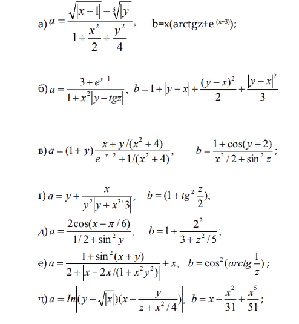
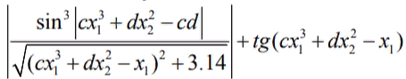

Ҳалли масъалаҳои барномасози Арифметикаи ададҳои ҳақиқӣ.ҳисоббарори аз рӯи формула дар Python.
1.
Дода шудаааст ададхои ҳақиқии а ва b. Ҳосили ҷамъ, зарб ва ҳосили тарҳи онро ҳисоб кунед.
a=int(input())
b=int(input ())
print (f"{a}+{b}={a+b}")
print (f"{a}-{b}={a-b}")
print (f"{a}*{b}={a*b}")
print (f"{a}:{b}={a/b}")
2.
Дода шудааст ададҳои ҳақиқии х ва у. Ҳисоб кунед.
x=int(input())
y=int(input ())
print (f"{x}+{y}={x+y}")
3.
Дода шудааст дарозии рўяи куб. Ҳаҷми куб ва масоҳати сатҳи паҳлўии он ёфта шавад.
kub=int(input())
print (f"Hajmi kub: {kub^3}")
print (f"Masohati kub: {kub^2}")
4.
Дода шудааст ду адади ҳақиқии мусбат. Ададҳои миёнаи арифметики ва миёнаи геометри ёфта шаваад.
import math
a=int(input())
b=int(input ())
print (f"Adadi miyonai arifmetiki: {(a*b)/2}")
print (f"Adadi miyonai geometri: {math.sqrt(a*b)}")
5.
Дода шудааст ду адади ҳақиқи. Ёфта шавад адади миёнаи арифметики ва миёнаи геометрии модули он.
import math
a=int(input())
b=int(input ())
print (f"Adadi miyonai arifmetiki: {(a*b)/2}")
print (f"Adadi miyonai geometri: {math.sqrt(abs(a*b))}")
6.
Дода шудааст катетҳои секунҷаи росткунҷа. Ёфта шавад гипотенуза ва масоҳати он
a=int(input())
b=int(input ())
c1=(a^2)+(b^2)
c=c1^c1
print (f"Gipotenuzai sekunja: {c}")
print (f"Masohati sekunja: {(a*b)/2}")
7.
Омехта шудааст U1 литри оби ҳарораташ t1 бо U2 бо литри оби ҳарораташ t2. Ёфта шавад ҳаҷм ва ҳарорати омехтаи ба вуҷуд омада.
v1=int(input())
t1=int(input ())
v2=int(input())
t2=int(input ())
v=v1+v2
t=(v1*t1+v2*t2)/v
print (f"Hajm: {v}")
print (f"Harorat: {t}")
8.
Муайян кардани периметри n- кунҷаи мутаносиб, ки дар давраи радиусаш r кашидашудааст.
n=int(input())
r=int(input ())
pi=3.14
p=2*n*r*(math.sin(pi/n))
print (f"Perimetr: {p}")
9.
Се муқовимати R1, R2, R3 параллели пайваст шудаанд. Муқовимати пайвастшавиро ёбед.
r1=int(input ())
r2=int(input ())
r3=int(input ())
mp=r1*r2*r3/(r1*r2+r1*r3+r2*r3)
print (f"Muqovimati payvastshavi: {mp}")
10.
Муайян кардани вақти афтидани санг а рўи замин аз баландии h
import math
h=int(input ())
t=math.sqrt(2*h/9.8)
print (f"Vaqti aftidan: {t}")
11.
Дода шудааст x,y,z.ҳисоб кардани a ва b агар

import math
x=int(input ())
y=int(input ())
z=int(input ())
e = 2.71828182846;
pi=3.14
A:
a=((math.sqrt(abs(x-1)))-(math.sqrt(abs(y))))/(1+((x^2)/2)+((y^2)/4))
b=x*(math.arctgz+(e^(-(x+3))))
print ("A:")
print (f"a={a}")
print (f"b={b}")
Б:
a=(3+e^(y-1))/(1+(x^2)*(abs(y-math.tgz)))
b=1+(abs(y-x))+(((y-x)^2)/2)+((abs(y-x)^2)/3)
print ("Б:")
print (f"a={a}")
print (f"b={b}")
В:
a=(1+y)*(((x+y)/((x^2)+4))/(((e^(-x-2)+1)/((x^2)+4))))
b=(1+(math.cos(y-2)))/((x^2)/(2+((math.sin(z)))^2))
print ("В:")
print (f"a={a}")
print (f"b={b}")
Г:
a=y+(x/((y^2)*(abs(y+(x^3)*3))))
b=1+((math.tg(z/2))^2)
print ("Г:")
print (f"a={a}")
print (f"b={b}")
Д:
a=(2*(math.cos((x-pi)/6)))/(1/(2+(math.sin(y))^2))
b=1+((2^2)/((3+(z^2))/5))
print ("Д:")
print (f"a={a}")
print (f"b={b}")
Е:
a=((1+(math.sin(x+y)^2))/(1/(2+(abs((x-2*x)/(1+(x^2)*(y^2)))))))+x
b=(math.cos(math.arctgz(1/z)))^2
print ("Е:")
print (f"a={a}")
print (f"b={b}")
Ҷ:
a=math.ln(abs((y-math.sqrt(abs(x)))*(x-(y/((z+(x^2))/4)))))
b=x-((x^2)/31)+((x^5)/51)
print ("Ҷ:")
print (f"a={a}")
print (f"b={b}")
12.
Дода. шудааст тарафи секунҷаи баробарпаҳлў. Масоҳати секуҷа ёфта шавад.
a=int(input ())
s=(math.sqrt(3))/(4*math.sqr(a))
print (f"Masohati sekunja: {s}")
13.
Ҳисоб кардани даври лаппиши раққосаки дарозиа l.
14.
Муайян кардани қувваи ҷозибаи F байни ҷисми M1, M2, ки аз якдигар дар масоҳати r ҷойгир шудаанд.
15.
Дода шудааст гипотенуза ва катети секунҷаи росткунҷа. Катети дуюм ва радиуси даруни давра ёфта шавад.
import math
a=int(input ())
c=int(input ())
b=math.sqrt(c*c-a*a)
r=(a+b-c)/2
print (f"Katedi duyum: {b}")
print (f"Radiusi daruni davra: {r}")
16.
Маълум аст дарозии давра. Масоҳати доираи бо давра маҳдуд, ёфта шавад.
import math
r=int(input ())
pi=3.14
s=pi*(r^2)
print (f"Masohati doira: {s}")
17.
Масоҳати доира ёфта шавад, ки радиуси дохилии он ба 20 баробар аст, радиуси беруна ба рақами додашуда r (r> 20).
import math
r1=20
r2=int(input ())
pi=3.14
s1=pi*math.sqrt(r1)
s2=pi*math.sqrt(r2)
s=s2-s1
print (f"Masohati doira: {s}")
18.
Секунҷа дода шудааст бо бузургии кунҷҳояш ва радиуси давраи дарункашидашда.Тарафҳои секунҷа ёфта шавад.
19.
Вақтеро муайян кунед, ки дар фосилаи он 2-ҷисми ба муқобили якдигар бо суръати якхела ҳаракат карда истода, агар суръати ибтидои, суръатгири ва масофаи ибтидоии байни онҳо маълум бошад, вомехуранд.
20.
Ёфта шавад суммаи аъзоҳои прогрессияи арфметики a d a n d ,..., ( 1) аз рўи
маънои зерин a,d,n
21.
Дода шудааст ададҳои ҳақиқии c,d. ҳисоб кардани,

ки дар он x1- калон, x2 муодилаи решаи хурд, x^2-3x-[cd]=0
import math
s=5
d=9
discremenat=9+4*abs(c*d);
x1=(3+math.sqrt(discremenat))/2
x2=(3-math.sqrt(discremenat))/2;
if(x1 < x2)
discremena=x2
x1=x2
x2=discremenat
discremenat=abs(c*x1*x1*x1+d*x2*x2-c*d)
s=abs((math.sin(discremenat)*math.sin(discremenat)*math.sin(discremenat))/(math.sqrt(math.sqr(discremenat)+3.14)))
s=s+math.sin(c*x1*x1*x1+d*x2*x2-x1)/math.cos(c*x1*x1*x1+d*x2*x2-x1)
print(s)
22.
Ёфта шавад масоҳати трапетcияи баробарпаҳлў бо асосҳои а ва b ва кунҷи alfa дар асоси зиёди а.
23.
Секунҷа дода шудааст бо дарозии тарафҳо. Ёфта шавад:
1. Дарозии баланди;
2. Дарозии медиана;
3. Дарозии биссектриса;
4. Радиуси дарункашидашуда ва берункашидашудаи давра;
24.
Ҳисоб карда шавад мсофаи байни ду нуқтаҳо бо координатаҳои x1, y1 ва x2, y2
25.
Секунҷа дода шудааст бо координатаҳои қуллаи худ. Ёфта шавад:
а) пераметри секунҷа;
в) масоҳати секунҷа
26.
Масоҳати секторро, ки радиусаш баробар ба 13,7, ва камонаш дорои рақами додашудаи радиан F мебошад, ёбед.
27.
. Дода шудааст ададҳои ҳақиқии мусбати a, b, с . аз 3- тараф бо дарозии а,b,с секунҷа сохтан мумкин . Кунҷҳо секунҷа ёфта шавад.
28.
Дода шудааст адади ҳақиқии х. Бе истифодабари аз ҳеҷ.
29.
Дода шудааст ададҳои ҳақиқии х,у. Бе ҳеҷ хел амал ба ғайр аз зарб, ҷаъ ва тарҳ ҳисоб карда шавад 3x^2y^2-2xy^2-7x^2-y-4y^2+15xy+2x^2-3x+10y+6 Аз истифодабарии на зиёда аз 8-зарб,8-ҷамъ ва 8-тарҳ иҷозат дода мешавад.
x=4
y=8
r=(3*(x*x)*(y*y))-(2*x*(y*y))-(7*(x*x)*y)-(4*(y*y))+(15*x*y)+(2*(x*x))-(3*x)+(10*y)+6
print(r)
30.
Дода шудааст адади ҳақиқии х. Бе истифодабари аз ҳеҷ хели дигари амалҳои арифметики, ба ғайрр аз зарб, ҷамъ ва тарҳ, ҳисоб карда шавад 1-2x+3x^2-4x^3 ва 1+2x+3x^2+4x^3 На зиёда аз 8 амалиёт истифода бурдан иҷозат дода мешавад.
x=5
r1=1-2*x+3*(x*x)-4*(x^3)
r2=1+2*x+3*(x*x)+4*(x^3)
print(r1)
print(r2)
31.
Дода шудааст адади ҳақиқии а. Ҳеҷ хел амалҳои арифметикро истифода набурда, ба ғайр аз зарб ҳосил кунед:
а) а^4 дар ду амал;
б) а^6 дар се амал;
в) а^7 дар чор амал;
г) а^8 дар се амал;
д) а^9 дар чор амал;
е) а^10 дар чор амал;
з) а^13 дар панҷ амал;
и) а^15 дар панҷ амал;
к) а^21 дар шаш амал;
л) а^28 дар шаш амал;
м) а^64 дар шаш амал;
a=5
print("a)")
print("1) "a**4)
print("2) ",a*a*a*a)
print("б)")
print("1) "a**6)
print("2) "a*a*a*a*a*a)
print("3) "a**3*a**3)
print("в)")
print("1) "a*a*a*a*a*a*a)
print("2) "a**7)
print("3) "a**2*a**2*a**3)
print("4) "a**4*a**3)
print("г)")
print("1) "a**8)
print("2) "a**4*a**4)
print("3) "(a*a)**4)
print("д)")
print("1) "a**9)
print("е)")
print("1) "a**10)
print("з)")
print("1) "a**13)
print("и)")
print("1) "a**15)
print("к)")
print("1) "a**21)
print("л)")
print("1) "a**28)
print("м)")
print("1) "a**64)
32.
Дода шудааст адади ҳақиқии а. Ҳеҷ хел амалҳои арифметикро истифода набурда, ба ғайр аз зарб ҳосил кунед:
а) а^3 ва а^10 дар чахор амал;
б) а^4 ва а^20 дар панҷ амал;
в) а^5 ва а^13 дар панҷ амал;
г) а^5 ва а^15 дар панҷ амал;
д) а^2,а^5,а^17 дар шаш амал;
е) а^4,а^12,а^28 дар шаш амал;